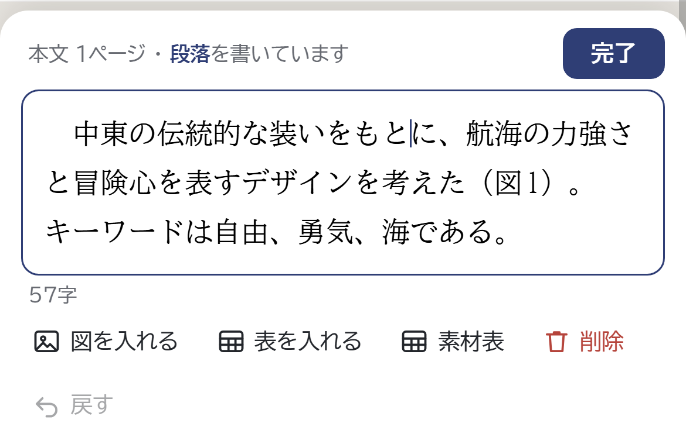
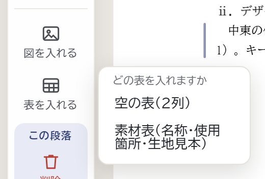

3
本文を書く
段落・見出し・図・表
紙面の上で、そのまま書きます。字の大きさ・行の間・見出しの番号は、ツールが手順書どおりにそろえます。
 123456
123456
スマホでは
段落をタップすると、画面の下に「書く欄」が開きます。図・表は書く欄のボタンで、見出しは画面の下の「追加」から入れます。
- 1書きたいところをクリック
紙面の段落をクリックすると、その場に書く欄が開きます。書き終えたら Esc キーか、紙面の外をクリック。
- 2Enter で次の段落へ
段落を分けるところで Enter。「。」を忘れても自動で付きます。段落の頭で Backspace を押すと、前の段落とつながります。
- 3図を入れる
図を指したい文中の位置をクリックしてから押し、写真を選びます。
- 4表を入れる
図と同じく、入れたい位置をクリックしてから押します。
- 5見出しを足す
「小見出し」（ⅰ．）・「大見出し」（Ⅰ．）は、書いている段落の後ろに入ります。番号は自動です。
- 6元に戻す
間違えたら「元に戻す」（Ctrl＋Z）。直前の操作を取り消せます。
図を入れたところ
 AB
AB- A書いていた位置に「（図1）」が入ります。番号は自動でそろいます。
- Bすぐ下に図が入り、タイトルの欄が開きます。書いて Enter で文の続きへ。
表を選ぶ

「空の表（2列）」か「素材表（名称・使用箇所・生地見本）」を選び、表のタイトルを書いて Enter。セルを書いているときは「行を足す」「列を足す」「画像を入れる」が出ます。
知っておくと安心
- ページは自動で分かれます（「改ページ」もあります）
- 原稿は自動で保存（この端末と Google ドライブ）
- 図・表が押せないときは、先に文中をクリック
- ボタンにマウスを重ねると、入る場所に線が出ます
 1234567
1234567